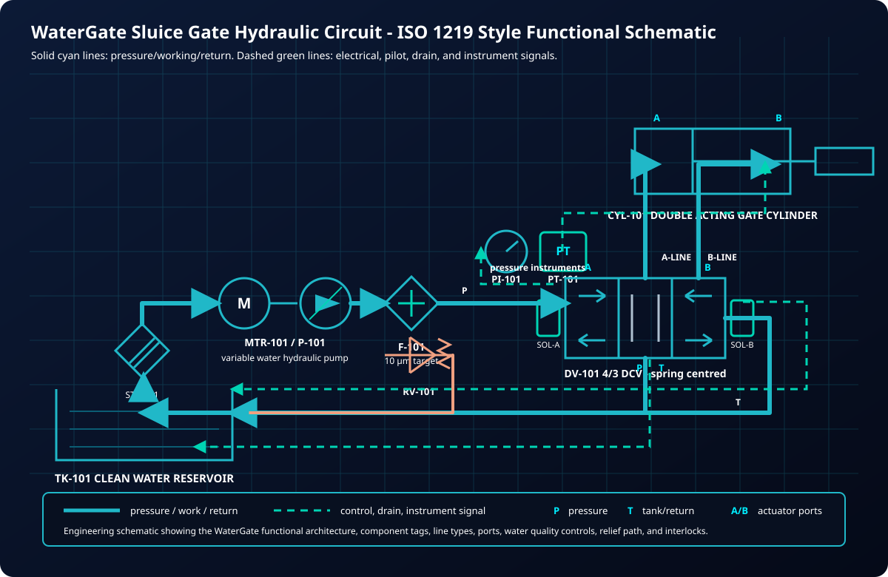
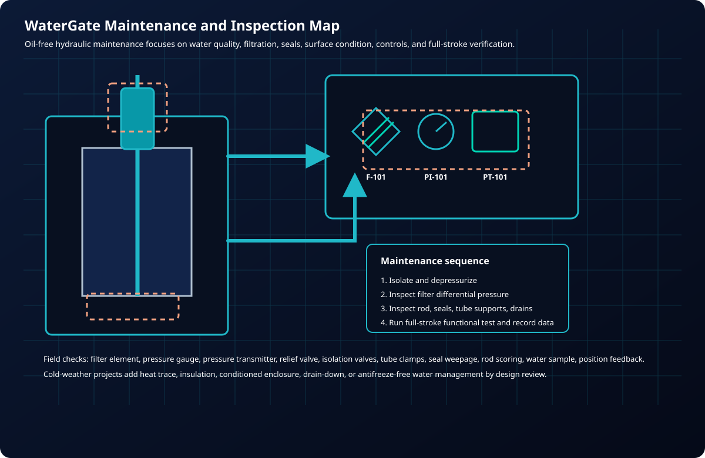

Isolate the channel with water hydraulic power.
Isolate the channel when your team needs access. Water hydraulic actuation removes oil from the gate’s working circuit while providing controlled movement, with debris, water-level differences and bypass arrangements included in the equipment review.

Retrofit Logic
Do not automate a binding gate blindly.
A dependable channel isolation starts with a gate that can travel freely. Inspect guides, seals, sludge build-up and corrosion before selecting actuator force. Repairing a binding mechanism protects the mounting structure and lets the water hydraulic package provide controlled movement for the actual load.
WaterQuest scopes the actuator, HPU, tube routing, filtration, drains, controls, and maintenance access as one package so operators receive a system they can inspect and service during shutdowns.
Channel gate review checklist
Measure actual gate travel and inspect guides, seals, frame, anchors, and mounting points.
Confirm process constraints: shutdown window, wet access, odour/corrosion exposure, and washdown.
Define operator modes: local, remote, jog, open/close limits, fault reset, and lockout.
Specify service tasks: filter changes, valve testing, full-stroke exercise, rod inspection, and water-quality checks.
Maintenance Model
Service points designed for plant crews.

| Item | Recommended practice |
|---|---|
| Filtration | Track filter differential pressure and change filter elements before valve performance degrades. |
| Gate exercise | Run full-stroke tests on an interval so operators know the gate will move when needed. |
| Seals and rod | Inspect rod surfaces and seal areas for scoring, deposits, corrosion, or abnormal weepage. |
| Controls | Verify limit switches, analog position, local controls, remote signals, and alarms. |
Build the retrofit around operations and maintenance.
Send gate photos, drawings, stroke, plant constraints, and the control philosophy you need.